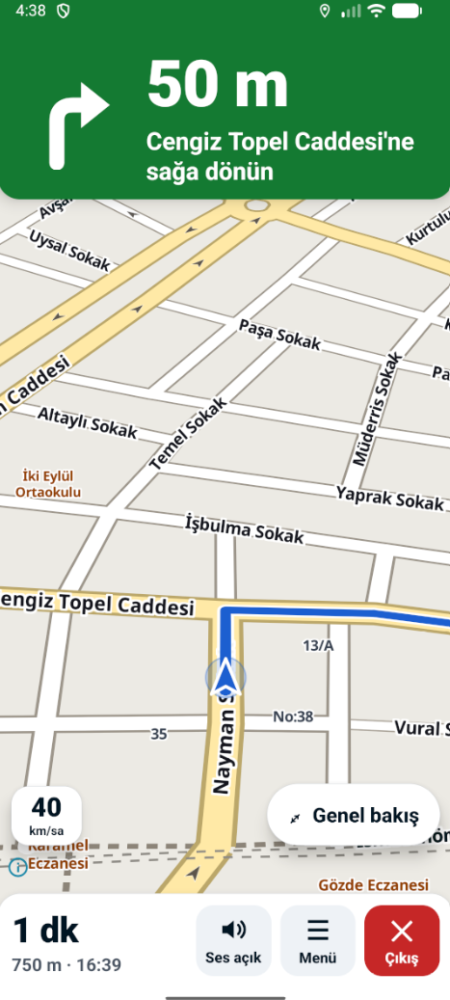
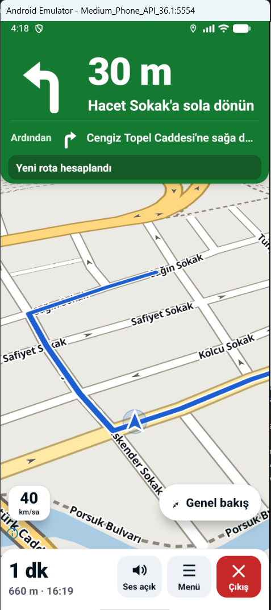

Kurye uygulamasının adım adım navigasyon ekranı için üç görsel dil. Hepsi aynı anı gösterir, aynı bilgiyi taşır ve aynı kuralları korur (çok büyük mesafe ve ok, eldivenle basılabilir 56 dp+ hedefler, kasıtlı çıkış, puk alt üçte birde, rota puktan yukarı). Fark yalnızca görünüşte: renkler, köşeler, gölgeler, yazı tipi, ikonlar ve harita paleti. Uygulama kodu henüz değişmedi.
Gösterilen an: 50 m sonra Cengiz Topel Caddesi'ne sağa dönüş, ardından Müderris Sokak'a sola. Hız 40 km/sa, kalan 1 dk · 750 m · varış 16:39. Ses açık. Yukarıdaki düğmelerle gündüz / gece, "harita kaydırıldı" (Ortala düğmesi), bildirim ve kaba bir güneş parlaması benzetimi açılıp kapanır.


| Ölçüt | A · Sade | B · Koyu / premium | C · Marka / canlı |
|---|---|---|---|
| Güneşte okunurluk | Çok iyi: beyaz kart, siyaha yakın metin (16:1), mavi karoda beyaz ok | İyi: panel kontrastı çok yüksek ama koyu yüzey ekran camında yansımayı artırır | Çok iyi: teal bantta beyaz metin (5,5:1), beyaz alt panel |
| Gece | İyi: koyu gri yüzeyler, kısık harita | Çok iyi: en az parlama, harita neredeyse siyah | İyi: koyu teal bant, sıcak kısık harita |
| Eldiven hedefi | Düğme 68×64, hap 56, Ortala 64 | Düğme 68×64, hap 56, Ortala 64 | Düğme 70×64 hap, hap 56, Ortala 64 |
| Uygulama maliyeti | M | M | S–M |
| MapLibre stil değişikliği | Evet: yol kenarlıkları açılır, ana yol sarısı kısılır, elle gece paleti | Evet: iki palet de yeni (gümüş gündüz, koyu gece) | Küçük: sıcak tonlar + elle gece paleti |
| Yeni yazı tipi | Inter (isteğe bağlı; Roboto ile de çalışır) | Barlow Condensed (rakamlar) + Inter | Nunito |